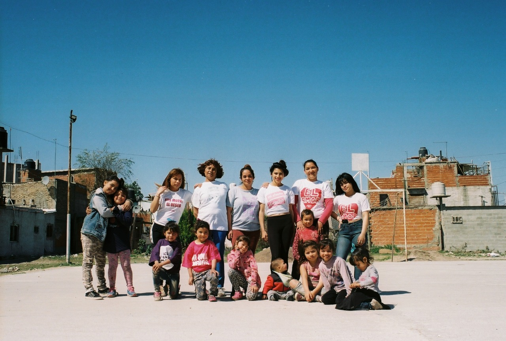

Quisiera q las personas entiendan q no solo se trata de quedarse en casa. Hay kienes no kuentan kon el konfort de un hogar ... de poder disfrutar el frio calor (Aire akondicionado ) abrir la heladera y elegir q descongelar para almorzar cenar y demás. Muchos no disfrutan ese placer de la vida de poder elegir.
¿Qué comemos hoy? Es una pregunta para privilegiados y está bien se lo merecen se lo ganan la vida trabajando. Quizás hay personas q no quisimos nacer pobres sin estudios sin trabajo sin techo ni comida digna. Nooo no es así estas personas trabajan konstruyen lo q pueden y tienen el saber más grande q hay en la vida q es el Saber q no hay, no hay trabajo, no hay techo no hay comida y lo tienen bien estudiado y se acostumbran a más de lo mismo ....vi muchos casos de falta de red de agua q dependen del aguatero sii señor@s aguatero el q va y te carga los tanques de agua en tu casa y de ahí cocinas te bañas lavas y todo eso en este siglo. Casas totalmente precarias sii precarias chapa madera lonas todo lo q se pueda clavar lo hacen pared y divisiones y ¿el techo ? A veces me pregunto si llueve más adentro q afuera no sé, será una impresión ... pero son hogares por q son hogares. Muchos digamos ranchos son hogares q no tuvieron mucha suerte a la hora de konstruirse y doy fe de lo q digo por q soy una más de esas personas q se acostumbraron a que no hay pero la peleamos día a día para q nuestros esfuerzos valgan la pena y konstruir un lugar mejor por q pese a todo cuando pasan estas cosas tan graves nosotros q somos pobres sin techo y lo q se kiera nos preokupamos por cada una de las personas q sabemos q están peor q nosotros mismos y damos hasta lo último q tenemos para el otro este un pokito mejor haci es señor@s con una mirada distinta construyendo un Nuevo Fiorito.
Desde belleza surgieron muchas cosas hermozas .... como el taller de arte de niños, el taller de serigrafía kada aprendizaje fue un reto kumplido y el comedor gourmet para los niños del taller y las familias de fiorito q tanto lo necesitan en este momento y no solo kosinamos los sábados pese a la pandemia si no también entregamos 1 vez por semana art. De limpieza y Alimentos básicos para cada familia todo esto de la mano de fernanda laguna, larisa, miku, kami, dani, lu, vicky, franco, maru, ailu y muchas personas que nos acompañaron en este trayecto.
En estos días tan dolorosos para todos llega el alivio a Fiorito .... las donaciones de alimentos alivian las necesidades de los que vivimos aquí. un millón de gracias besos y abrazos para toda esa gente q nos ayuda q siempre está pendiente de las necesidades del barrio. kisas no pudimos kumplir kon todas las personas pero la ayuda que nos sigua llegando será para akellos q todavía no pudieron recibir sepan q no nos olvidamos y ya pronto seguiremos repartiendo .
Gracias a gente q sigue kon sus donaciones y sin ellos esto no sería posible.
- Gisela Rivas, referente de Belleza y Felicidad Fiorito.
